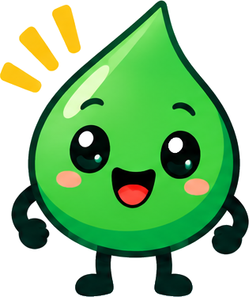
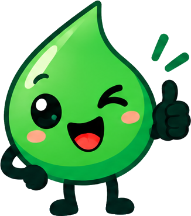
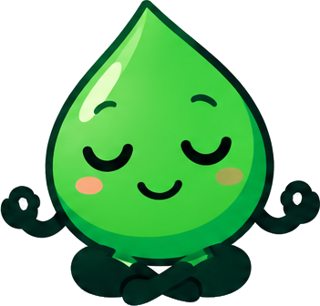
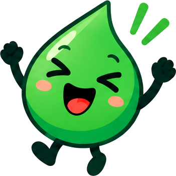
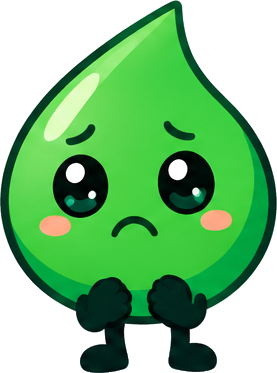
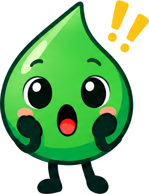
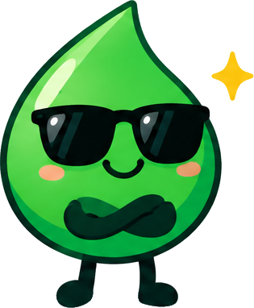
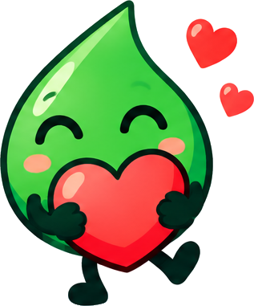
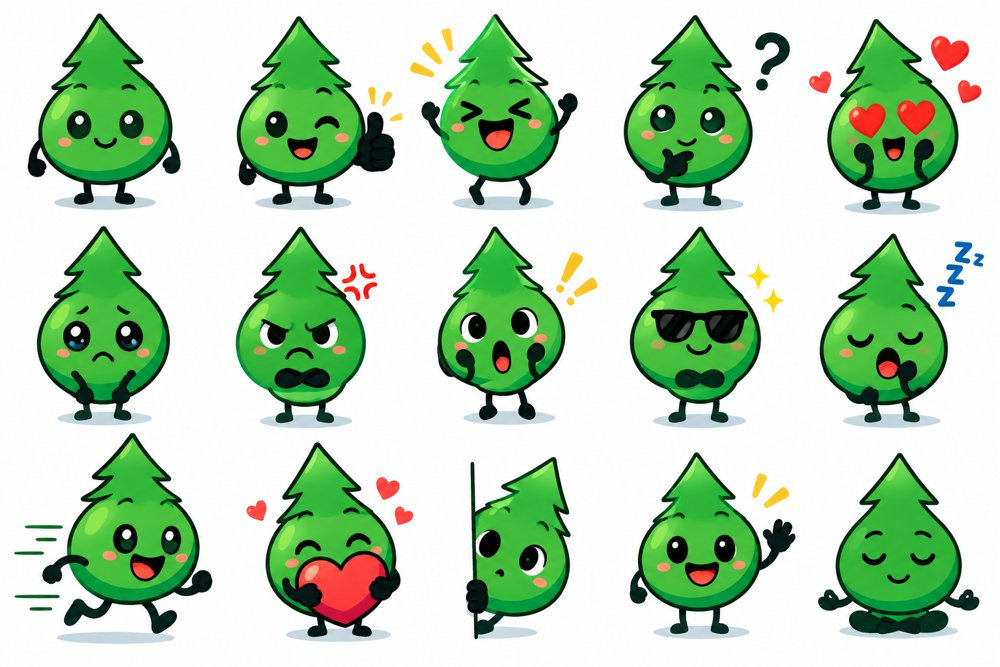

Tablet
In the kitchen, always on: voice, cards and a circle that shows what it is doing.
«Hey Pino»
A personal assistant with a voice, a face and a screen. There is only one Pino: one memory, many bodies. Today it lives on a tablet in the kitchen; tomorrow on a tiny holographic screen, on WhatsApp, on your phone.

Everything is going interface-less: you talk, something answers, and that's it. I don't buy it. When you talk to a person, the person is the interface: a raised eyebrow says more than a paragraph, a grimace says something else again. Words are only part of it.
So Pino talks and shows. Its voice gives you the first useful thing in one sentence; the rest goes on a card you can look at with your hands in the dough: a recipe step by step, tomorrow's events, the shopping list. And it has a face that listens, thinks and smiles back.
Pino listens, thinks, laughs, gets worried and is happy to help: the face says it before the voice does.







The first one was a Frankenstein of spare hardware, hence the name. Part of it was meant to work like Alexa, without a frontier model. It was slow, and it was impossible to carry around.
The smaller one: a tablet with a screen that is always on, Claude behind it, and cards drawn with A2UI, Google's protocol for interfaces written by an agent.
The grown-up one, with many bodies and one memory. Pino is what my sister used to call our dad, who is no longer here. It's a way to remember him. A kinder one.

Same Pino, same memory, different bodies. When more than one hears its name, you decide which one answers.
In the kitchen, always on: voice, cards and a circle that shows what it is doing.
Write to Pino where your life already happens.
A tiny ESP32-S3 screen with Pino's face: the first Pino that replaces Alexa for good.
Pino at your desk and in your pocket.
There is no Pino to sign up for. Pino is yours: you install it on your own server, with your own Claude subscription, and it grows with you. The code is open, the guide takes you from zero to the first «Hey Pino».